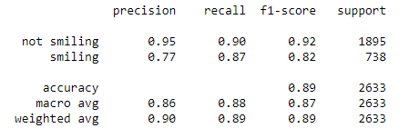
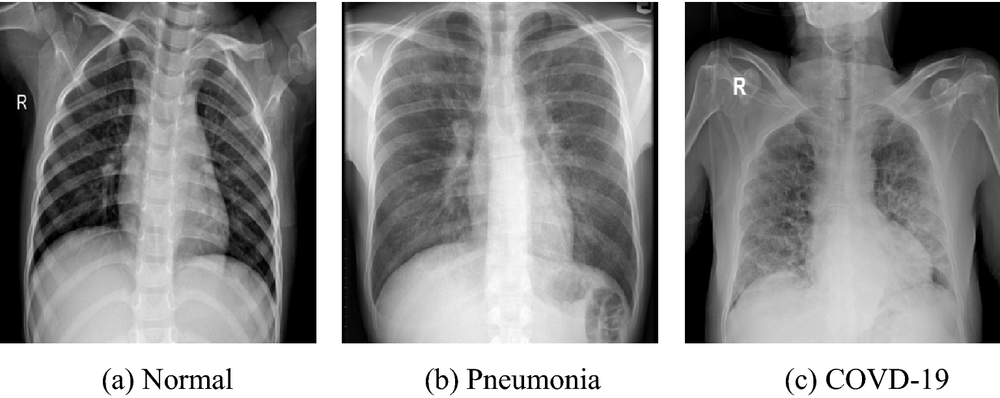
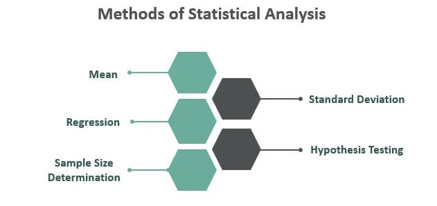
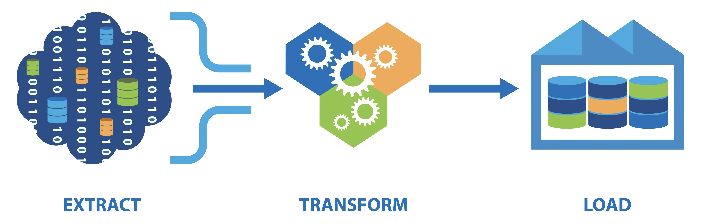

Projects
My portfolio includes seven projects on different topics focusing on Machine Learning, Computer Vision, Data Analysis, Statistics, ETL, and Cloud Deployment (AWS). Projects can be viewed by category below.
This page features projects from following topics:
Computer Vision
Smile Detection using Deep Learning
Highlights
- Developed a smile detection classifier using several state-of-the-art CNN architectures using TensorFlow.
- The architectures include ResNet50, Xception, ResNet152V2, VGG16, InceptionResNetv2, and LeNet5.
- Achieved highest accuracy of 89% with Xception architecture.
Tags: Python, Computer Vision, TensorFlow, Deep Learning, Convolutional Neural Networks
Summary
Developed a smile detection classifier using TensorFlow, a popular deep learning framework. The classifier was built using several state-of-the-art convolutional neural network (CNN) architectures, including ResNet50, Xception, ResNet152V2, VGG16, InceptionResNetv2, and LeNet5. These architectures are widely used in computer vision tasks and have been shown to perform well on a variety of datasets.
Reported that the Xception architecture achieved the highest accuracy among all the models, with an accuracy of 89%. This result suggests that Xception may be a good choice for smile detection tasks, at least for the dataset used in this study. The use of multiple architectures and careful evaluation of their performance can help researchers choose the best model for their specific task and data.
Below are the statistics calculated with Xception architecture:
Detection of COVID-19 in X-Ray images
Highlights
- Built a binary classification model using chest X-Ray images and VGG-16 convolutional neural network architecture pre-trained on ImageNet.
- New fully-connected layer was added to the pre-trained network to classify images as either normal or COVID-affected.
- Model was trained and achieved an accuracy of 93%.
Tags: Python, Computer Vision, TensorFlow, Deep Learning, Convolutional Neural Networks
Summary
In recent years, deep learning has shown promising results in medical image analysis, including detecting COVID-19 from chest X-rays. One popular approach is to use pre-trained convolutional neural network (CNN) models, such as VGG-16, ResNet, or DenseNet, and fine-tune them on COVID-19 chest X-ray datasets. The fine-tuning process involves removing the original classification layer and adding a new one to adapt the model to the specific COVID-19 detection task.
Besides using pre-trained models, researchers have also developed specialized architectures for COVID-19 detection. For example, COVID-Net is a CNN model specifically designed for COVID-19 detection from chest X-rays. COVID-Net uses a series of convolutional and pooling layers followed by several fully-connected layers to classify chest X-rays as normal, pneumonia, or COVID-19.
The goal of the project is to develop a machine learning model that can accurately and quickly detect COVID-19 infection from chest X-ray images. By achieving an accuracy of 93%, the model shows promise as a potential tool for COVID-19 screening and diagnosis.
Diffusion Models
Image Generation of Butterflies using Diffusion Models
Highlights
- Trained a diffusion model using Hugging Face's diffusers library to generate visually impressive butterfly images.
- Used a noise scheduler to add noise to 1000 high-quality butterfly images and trained a UNet architecture for denoising.
- Employed the backward denoising process, optimizing the model parameters using AdamW optimizer and minimizing the mean squared error (MSE) loss function.
Tags: Python, Hugging Face, PyTorch, Deep Learning
Summary
DDPM (Denoising Diffusion Probabilistic Models) is a type of generative model that can learn to generate realistic images by estimating the probability distribution of the data. DDPMs use a diffusion process to transform a random noise signal into an image that is close to the target distribution. In the diffusion process, noise is gradually added to the signal, and the signal is then denoised using a neural network. By iteratively adding noise and denoising, the model can learn to generate high-quality images that match the target distribution.
Stable diffusion is a modification of the diffusion process used in DDPMs to improve their stability and performance. In stable diffusion, the amount of noise added to the signal is adaptively adjusted at each step to ensure that the signal remains close to the target distribution. This adaptation is done by monitoring the signal's gradient and scaling the noise accordingly. Stable diffusion can help avoid numerical instability and ensure that the diffusion process converges to the target distribution efficiently.
In this project, a diffusion model was trained using Hugging Face's diffusers library to generate stunning butterfly images. To improve the quality of the images generated by the diffusion model, a UNet architecture was trained for denoising using a noise scheduler that added noise to 1000 clean butterfly images. The backward denoising process was implemented using the AdamW optimizer and the mean squared error (MSE) loss function to update the model parameters. Overall, this approach allowed for the generation of visually impressive butterfly images with improved quality and clarity.
Below is how the noise is added to a clean butterfly image:
Data Analysis
Financial Service Analysis using R, MongoDB, and AWS
Highlights
- Worked on data analysis for financial services using MongoDB database containing three documents.
- Created a docker container to run MongoDB data analysis in R and deployed it on AWS EC2 instance using Jenkins pipeline for continuous integration and deployment of Docker images from GIT.
Tags: R, NoSQL (MongoDB), Docker, Jenkins, AWS
Summary
In this project, I worked on data analysis for financial services using a MongoDB database containing three documents. To analyze the data, I created a docker container to run MongoDB in R and deployed it on an AWS EC2 instance. To facilitate continuous integration and deployment of Docker images from Git, I set up a Jenkins pipeline. This approach allowed for efficient and streamlined data analysis and deployment, enabling the financial services company to make data-driven decisions and improve their business operations.
Google Data Analytics Case Study

Highlights
- This project was performed as part of Google Data Analytics Professional Certificate
- Performed real-world data analysis in R for a fictional company called Cyclistic.
Tags: R, Data Analysis
Summary
Hypothetical Scenario:
I am a junior data analyst working in the marketing analyst team at Cyclistic, a bike-share company in Chicago. The director of marketing believes the company’s future success depends on maximizing the number of annual memberships. Therefore, our team wants to understand how casual riders and annual members use Cyclistic bikes differently. From these insights, our team will design a new marketing strategy to convert casual riders into annual members. But first, Cyclistic executives must approve our recommendations, so they must be backed up with compelling data insights and professional data visualizations.
Statistical Analysis
Campus Recruitment Analysis
Highlights
- Conducted Multiple Linear Regression analysis to predict employment test percentage based on high school, secondary education, and degree percentages.
- Executed a one-way Analysis of Variance (ANOVA) to compare employment test percentage means between male and female groups.
Tags: R, Data Analysis
Summary
Hypothetical Scenario:
I am a junior data analyst working in the marketing analyst team at Cyclistic, a bike-share company in Chicago. The director of marketing believes the company’s future success depends on maximizing the number of annual memberships. Therefore, our team wants to understand how casual riders and annual members use Cyclistic bikes differently. From these insights, our team will design a new marketing strategy to convert casual riders into annual members. But first, Cyclistic executives must approve our recommendations, so they must be backed up with compelling data insights and professional data visualizations.
Extract, Transform, and Load (ETL)
ETL Using Apache Airflow and Kafka
Highlights
- Performed ETL on National Highway Toll data by building data pipelines using Apache Airflow’s DAGs (Directed Acyclic Graphs) and loaded the data into PostgreSQL.
- Implemented streaming data pipelines to load the data into SQL Server database using SQL Queries in SSMS and Apache Kafka.
Tags: R, Data Analysis
Summary
ETL stands for Extract, Transform, and Load, which is a process of integrating data from multiple sources, transforming it into a useful format, and then loading it into a target system for analysis. It is an essential process in data warehousing, business intelligence, and data analytics.
The goal of this project is to perform ETL on National Highway Toll data by creating data pipelines using Apache Airflow's DAGs. I extracted data from the source, transformed it into a suitable format, and loaded it into PostgreSQL database for analysis.
I, then, implemented streaming data pipelines to load data into SQL Server database using Apache Kafka. It means that I have built a continuous data processing system that can process and load data in real-time, enabling businesses to gain insights and take actions faster.